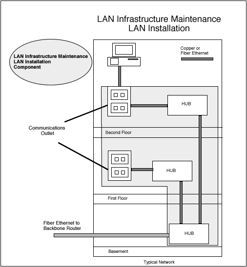

- data -
edu This page has been accessed times since September 11, 1997. . Although we are not responsible for the DCW data itself (see About DCW), we are trying to automate our responses, so please read our new "Frequently Asked Questions" section. Our mapping function will give you a preview of the data. The entire data set is also available, on CD-ROM, at the Pennsylvania State University's Maps Library or from ESRI.
 |
edu Scripps Institution of Oceanography University of California, San Diego Last updated 26 Feb 2002 . . NEMO - Oceanographic Data Server (SIO) NEMO - Oceanographic Data Server Physical Oceanography Research Division of Scripps Institution of Oceanography, La Jolla, California What is Nemo. Nemo is a collection of data sets useful for physical oceanographers here at Scripps Institution of Oceanography. What is on Nemo (available to all) Calsearch - Search and extract the archive site for CalCOFI hydrographic data A long term (1949-present) project off the Calif.
 |
The set of key-value pairs is enclosed into the curvy brackets. . All data is stored in the text form to make it easy to move files between platforms, and to process CommuniGatePro data with external programs. Strings, Dictionary, and Array Formats Strings Strings are the very basic, unstructured data. A string is either an atom - a sequence of letters and digits, or a quoted string - a sequence of any printable symbols except the quotation mark and the backslash symbol enclosed into the quotation marks (").
|  |
Constantly crawling the entire web (see methodology), we have obtained a wealth of publicly available information used to produce both our unique free reports as well as our paid reports made available at the start of each month. Paid Reports With currently 52 pre-selected reports in 11 categories, we have the the ability to customize additional reports for your needs. Our data sets make available competitive information not found elsewhere on the web. With viewable archives dating back to 1998, no-one else on the web provides the breadth and depth of reporting available here. Interested in knowing what technologies new web sites are adopting vs existing web sites.
|
A good data site: http://www.data.com/datacomm/best_of_show.html
.